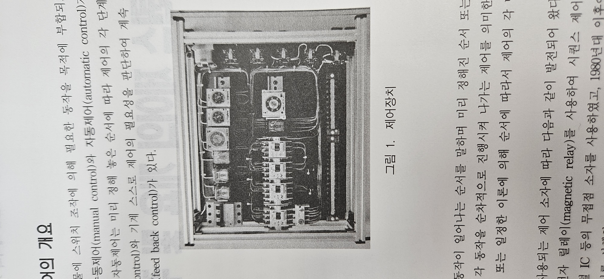
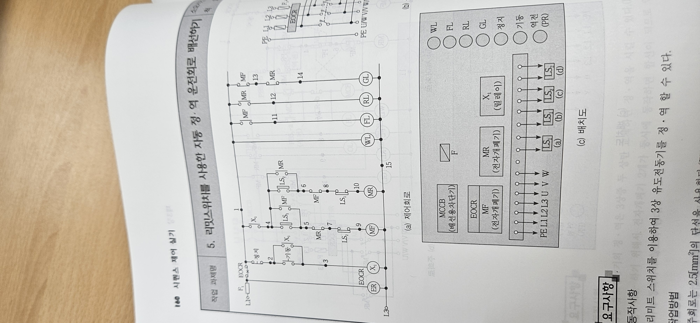
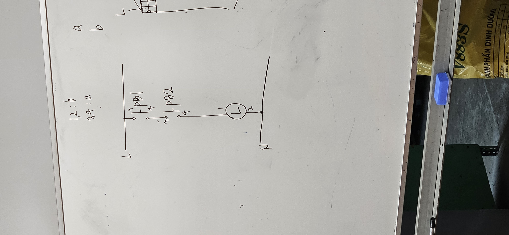

Sequence Control Simulation & Theory
시퀀스 제어(Sequence Control)는 산업 자동화 분야에서 매우 중요한 제어 방식으로, 특정한 조건이나 입력 신호에 따라 장치가 미리 정해진 순서대로 동작하도록 만드는 시스템이다. 이는 단순한 ON/OFF 제어를 넘어, 시간 지연, 반복 동작, 조건 분기 등을 포함하여 복잡한 공정을 자동으로 수행할 수 있도록 한다.
현대의 공장 자동화 시스템, 스마트 팩토리, 로봇 제어 등 다양한 분야에서 활용되며, 특히 PLC(Programmable Logic Controller)를 이용한 제어 시스템에서 핵심적인 개념으로 사용된다. 본 웹사이트에서는 이러한 시퀀스 제어의 개념을 이해하고, 간단한 시뮬레이션을 통해 실제 동작 원리를 체험할 수 있도록 구성하였다.
따라서 시퀀스 제어는 단순한 제어 기술이 아니라, 현대 산업의 효율성과 안전성을 동시에 확보하는 핵심 기술이라고 할 수 있다.
시퀀스 제어는 "순서(sequence)"라는 개념을 중심으로 동작하는 제어 방식이다. 즉, 하나의 동작이 끝나면 다음 동작이 이어지는 구조를 가지며, 각 단계는 입력 조건이나 시간 조건에 의해 결정된다.
예를 들어, 버튼을 누르면 모터가 먼저 작동하고, 일정 시간이 지난 후 밸브가 열리는 방식이 대표적인 시퀀스 제어이다. 이러한 구조는 논리 회로, 타이머, 카운터 등을 이용하여 구현되며, 실제 산업 현장에서는 PLC를 통해 프로그래밍된다.
시퀀스 제어는 단순하지만 매우 강력한 구조를 가지고 있어, 복잡한 공정도 단계적으로 나누어 효율적으로 제어할 수 있다는 장점이 있다.
상태: 대기 중



이처럼 우리가 일상에서 사용하는 많은 기계와 시스템은 시퀀스 제어를 기반으로 동작하고 있으며, 이를 이해하면 다양한 자동화 시스템의 원리를 쉽게 파악할 수 있다.